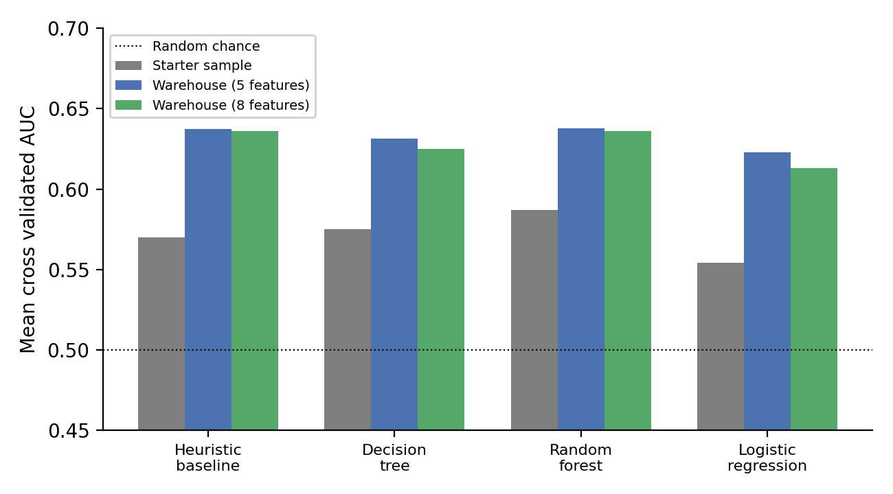

By Saad Wasay Chaudhary
Institute of Space Technology, Islamabad, Pakistan — this research was completed independently as part of the FlyRank Machine Learning Internship, not as university coursework.
Content teams that manage many web pages need a practical way to decide which pages should be refreshed first. This paper studies whether search performance data can support this decision, and whether machine learning gives a real advantage over a simple, easy-to-explain ranking rule.
A label was built from the change in average search ranking position between two time periods, using only features known before the second period began, so a model could not see the outcome in advance. A rank-based heuristic was compared against a decision tree, a random forest, and logistic regression, using client-grouped cross validation on two separate datasets.
Across three separate comparisons, no model beat the simple heuristic by a statistically meaningful margin, and the heuristic reached 92.5% precision among its top ranked pages on the full warehouse data — supporting use of the simpler and more transparent method in practice.
A content team that manages thousands of web pages cannot refresh all of them at once. Editorial time is limited, so some way of ranking pages by refresh priority is needed.
The question is narrow on purpose: given a page's observed search performance up to a certain point in time, can that page be ranked well enough to be useful for prioritization, and is a complex model actually needed?
Decision support. Given the data a content team already has, produce a ranked list of pages with a stated reason for each one, and be honest about where that list is likely to be wrong.
This work does not try to reverse-engineer Google's ranking algorithm. It does not claim that refreshing a page causes any particular change in its performance. It tests whether a complex model is even needed.
A simple heuristic was built first. Every model tried afterward had to prove it did better, on the same data, using the same validation method. This is the second question running through the entire study.
web pages — a small anonymized sample used to develop and test the overall method cheaply before touching the full data.
rows total in the FlyRank ML Internship Warehouse, released as a gated, anonymized dataset on Hugging Face. All identifiers hashed.
pages across 43 clients, with page counts ranging from 2 to 25,437 per client after exclusions.
fact_content_daily_performance
dim_content — word count, type, search volume, page creation
date
The month was split into two halves. If a page's average search ranking position got worse in the second half, it was labeled as needing a refresh. Click-through rate was tested first (zero for 63–64% of pages). Overall positive rate: 54.1%.
A single-feature heuristic using average position only. Values converted to percentile ranks within the training set, scaled by percentile min/max. No part tuned on test data.
Joined from dim_content — one row per page, no risk of duplication.
Every feature restricted to first-half data. Direct verification: every non-missing value fell before the cutoff.
Two page-level date fields described state at export time, not the correct historical point. Removed.
Only a single current snapshot available — not a point-in-time snapshot.
Carried most weight in an early tree — perfectly aligned with pages that had no history and couldn't decline. Removed.
| Method | Starter | Warehouse (5 feat.) | Warehouse (8 feat.) |
|---|---|---|---|
| Heuristic baseline | 0.5699 | 0.6373 | 0.6361 |
| Decision tree | 0.5752 | 0.6313 | 0.6248 |
| Random forest | 0.5870 | 0.6379 | 0.6362 |
| Logistic regression | 0.5542 | 0.6230 | 0.6131 |
| Method | Starter p | Warehouse 5f p | Warehouse 8f p |
|---|---|---|---|
| Decision tree | 0.809 | 0.265 | 0.075 |
| Random forest | 0.401 | 0.892 | 0.985 |
| Logistic regression | 0.442 | 0.039 | 0.055 |
Logistic regression was the only method that fell significantly below the baseline (warehouse 5-feature test).

AUC and Precision@K above are threshold-free and remain the primary evidence. As a supplementary check, accuracy, precision, recall, and F1 were also computed at a fixed threshold of 0.5, pooled out-of-fold — computed for the two warehouse tests only, not the starter sample.
| Method | Accuracy | Precision | Recall | F1 |
|---|---|---|---|---|
| Heuristic baseline | 0.608 | 0.649 | 0.598 | 0.622 |
| Decision tree | 0.607 | 0.634 | 0.648 | 0.641 |
| Random forest | 0.607 | 0.647 | 0.601 | 0.624 |
| Logistic regression | 0.604 | 0.607 | 0.762 | 0.676 |
| Method | Accuracy | Precision | Recall | F1 |
|---|---|---|---|---|
| Heuristic baseline | 0.608 | 0.650 | 0.598 | 0.623 |
| Decision tree | 0.603 | 0.637 | 0.617 | 0.627 |
| Random forest | 0.612 | 0.652 | 0.605 | 0.628 |
| Logistic regression | 0.597 | 0.599 | 0.772 | 0.674 |
All four methods land within a narrow accuracy band (0.597–0.612), consistent with the 0.62–0.64 AUC range above — these confirm, rather than add to, the ranking-level result.
| Method | True Neg. | False Pos. | False Neg. | True Pos. |
|---|---|---|---|---|
| Heuristic baseline | 40,284 | 24,699 | 30,788 | 45,696 |
| Decision tree | 36,326 | 28,657 | 26,900 | 49,584 |
| Random forest | 39,935 | 25,048 | 30,496 | 45,988 |
| Logistic regression | 27,216 | 37,767 | 18,202 | 58,282 |
Logistic regression stands apart: the highest recall of any method (0.762–0.772) but the lowest precision, with roughly 50% more false positives than any other method — a concrete, numeric face on the AUC finding that a linear decision boundary doesn't fit this label well.
Among true decliners ranked lowest by the model, the typical page had 9 days of recorded activity in the first half, vs only 2 days for pages correctly identified as stable.
The label describes a direction of change observed in one month — an association, not a cause-and-effect claim.
Only pages from clients with search console data connected — roughly a third of the pages in the warehouse.
As few as 2 pages for some clients, tens of thousands for others. Results are directional, not exact.
Content age was the strongest signal in the starter sample but carried almost none in the full warehouse — may reflect label construction differences.
The known blind spot around long-established pages is disclosed directly in the output rather than hidden behind a single score.
Strongest signals of declining search performance. Refresh first.
Early signs — watch for further decline before committing resources.
Stable — no current signs of needing a refresh. Deprioritize safely.
A short, plain-language reason for ranking — e.g. "visible in results but not earning clicks"
Pages matching the blind spot (long steady history) are flagged separately for manual review
Each page carries a continuous score — teams can further refine within tiers
All code is organized as executed notebooks under work/notebooks/. Outputs are saved
directly in each file — results can be checked without re-running any query against the gated
warehouse.
Built on the FlyRank ML Internship dataset.
flyrank.ai ↗